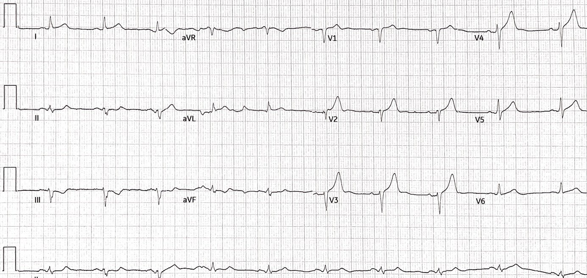
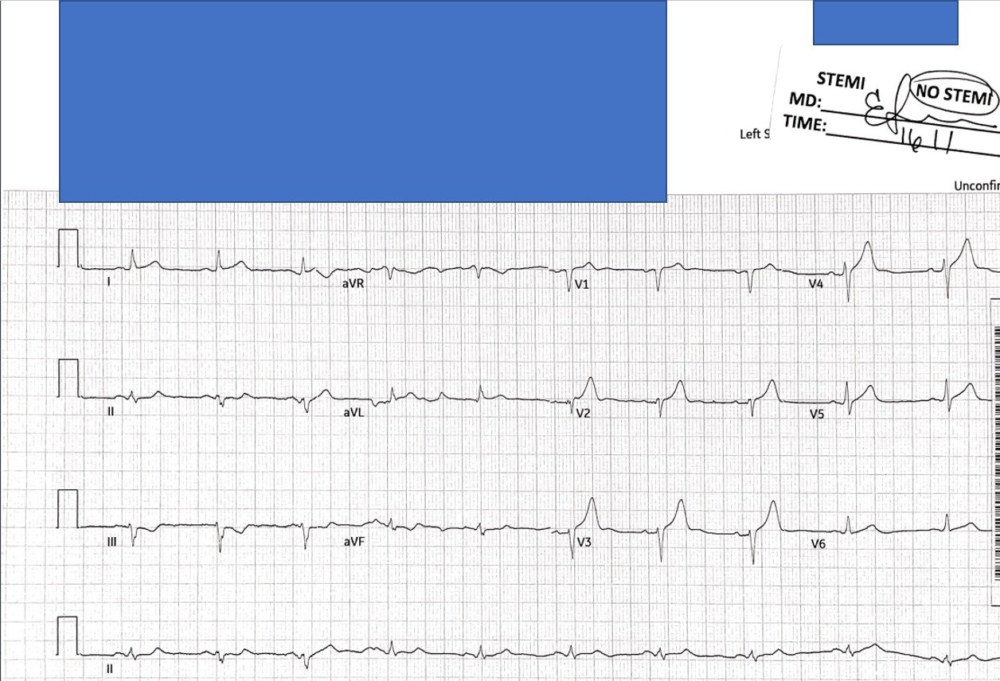
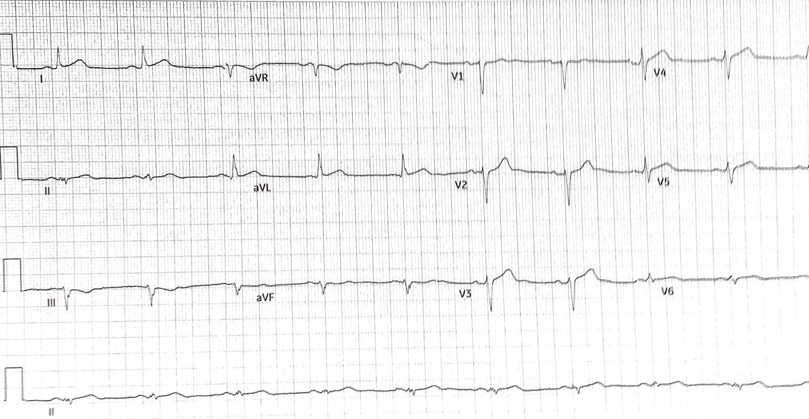
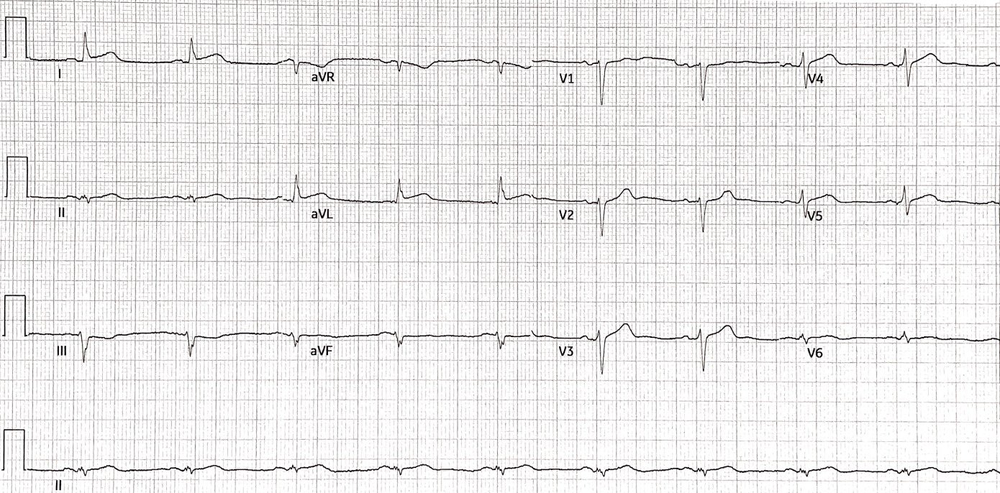
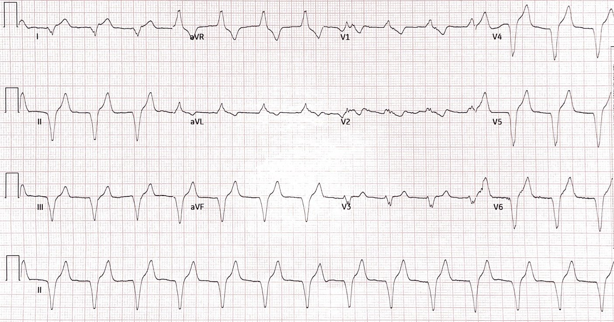
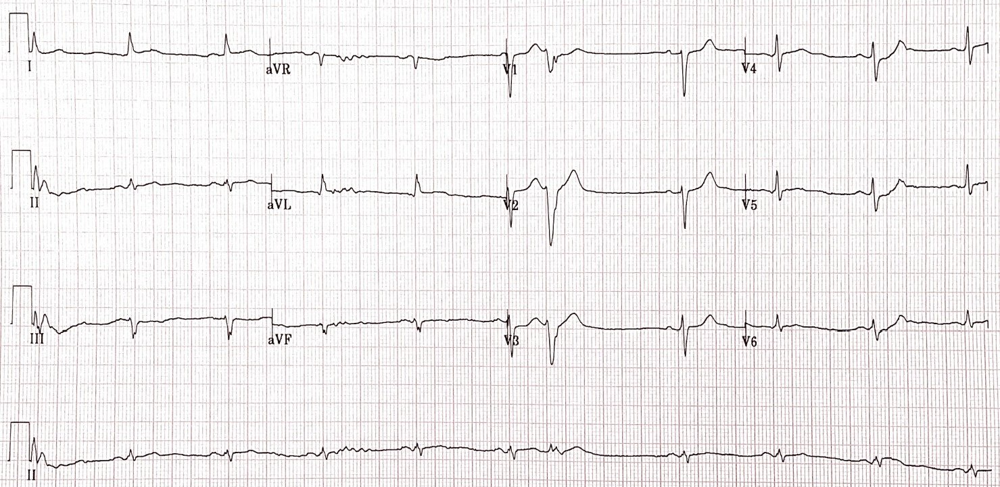
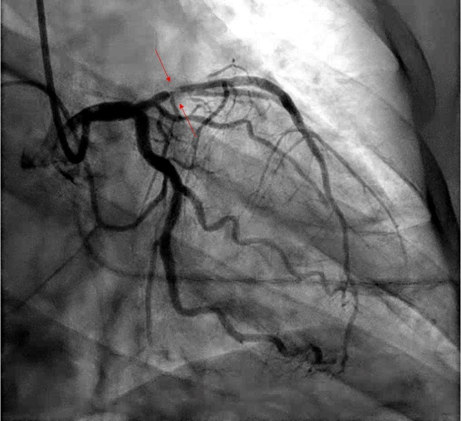
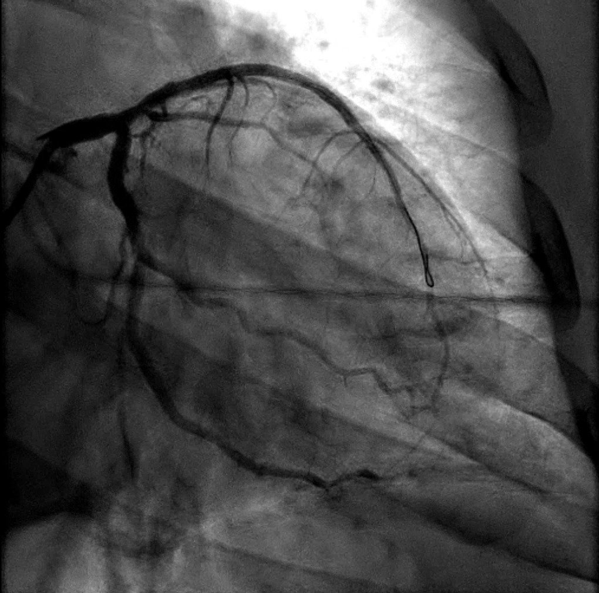

12/04/2021 — Chẩn đoán đúng dù theo mô hình sai
Bản dịch tiếng Việt của bài "Getting It Right Despite the Wrong Paradigm" – Dr. Smith’s ECG Blog. Giữ nguyên toàn bộ 8 hình ảnh của bản gốc.
Tác giả: Alex Bracey, biên tập: Meyers và Smith
Một bệnh nhân nam 50 mấy tuổi đến khoa cấp cứu (ED) do được chuyển từ một bệnh viện bên ngoài vì đau ngực. Trong lúc đội cấp cứu ngoài viện (EMS) bàn giao bệnh nhân, tôi xem qua hồ sơ chuyển viện để tìm điện tâm đồ ban đầu:


Có sóng T dạng xuống-lên (down-up) ở chuyển đạo III, đây là một dấu hiệu soi gương rất đặc hiệu của OMI thành bên cao.
Rất nghi ngờ OMI. Áp dụng công thức 4 biến để phát hiện OMI thành trước kín đáo sẽ cho: STE60V3 = 2.5, QTc = 360, RV4 = 3, QRSV2 = 5
Giá trị công thức = 19.6, tức là dương tính với OMI thành trước
Điểm cắt chính xác nhất của công thức là 18.2. Giá trị trên 19.0 rất đặc hiệu cho OMI do tắc LAD.
Xem thêm về cách sử dụng công thức tại đây.
Khi EMS tiếp tục bàn giao, tôi nhận thấy bệnh viện này rõ ràng buộc các bác sĩ phải xếp điện tâm đồ vào mô hình sai lầm STEMI hoặc “không STEMI:”


Đúng là bệnh nhân này không đạt tiêu chuẩn STEMI, nhưng cũng đúng là điện tâm đồ này có thể nhận ra là OMI và bệnh nhân cần được tái tưới máu cấp cứu, lý tưởng nhất là bằng can thiệp mạch vành.
EMS cho biết bệnh nhân đến bệnh viện bên ngoài với đau ngực lan ra cả hai vai. Bệnh nhân được ghi điện tâm đồ (ở trên), đáng chú ý có ‘thay đổi ST không đặc hiệu.”
Các điện tâm đồ liên tiếp đã được ghi và cho thấy thay đổi động (dynamic), lần lượt là các bản ghi sau, ghi 15 và 45 phút sau điện tâm đồ ban đầu:


Có cải thiện so với lần trước, tuy nhiên vẫn còn sóng T tối cấp ở các chuyển đạo trước tim, vẫn còn STE ở I và aVL kèm ST chênh xuống soi gương ở III và aVF, thể hiện tái tưới máu tự phát của OMI thành trước.
Tính chất động của điện tâm đồ khẳng định không còn nghi ngờ gì rằng bản ghi trước đó thực sự là OMI.


Diễn giải của Smith: Sóng T trước tim đang giảm dần trong khi STE thành bên cao đang tăng lên
Giờ có vẻ LAD đã thông nhưng nhánh chéo thứ 1 đang xấu đi.
Troponin I thế hệ 4 hiện hành lần đầu không phát hiện được (rất thường gặp).
Do kiểu đau của bệnh nhân, bác sĩ lo ngại bóc tách động mạch chủ và bệnh nhân được chụp CT mạch máu, kết quả âm tính.
Bác sĩ cấp cứu điều trị rõ ràng đã đủ lo ngại rằng bệnh nhân này bị tắc cấp một động mạch vành nên đã cho dùng thuốc tiêu sợi huyết, dù không đạt tiêu chuẩn STEMI (mặc dù STE ở I và aVL gần bằng 1 mm).
EMS cho biết sau đó xuất hiện “nhịp nhanh thất chậm”, và đã được dùng amiodarone:


Khi tôi hỏi bệnh, bệnh nhân cho biết vẫn còn cảm giác nặng ngực như trước, dù đã đỡ hơn so với trước khi dùng thuốc tiêu sợi huyết. Cơn đau giảm khi dùng nitroglycerin. Một điện tâm đồ được ghi sau khi chuyển viện:


Siêu âm tim tại giường (POC) được thực hiện bởi bác sĩ nội trú tuyệt vời của tôi:
Giảm động thành trước rõ, phù hợp với OMI do tắc LAD
Dựa trên triệu chứng thiếu máu cục bộ đang tiếp diễn và STE dai dẳng, tôi liên hệ bác sĩ tim mạch để làm PCI cứu vãn (rescue PCI), và bệnh nhân được làm thủ thuật khoảng 3 giờ sau khi dùng thuốc tiêu sợi huyết.


(Xem các mũi tên đỏ mảnh)


Troponin I đạt đỉnh 14.26 ng/mL ở thời điểm 24 giờ sau khi đến bệnh viện tiếp nhận, phù hợp với các giá trị gặp trong STEMI. Siêu âm tim chính thức được thực hiện ngay sau PCI cho thấy phân suất tống máu (EF) 20-25% với vô động thành trước. Ngay trước khi ra viện, siêu âm tim kiểm tra lại cho thấy EF cải thiện lên 40-49% và giảm động thành trước.
Điều này minh họa khái niệm “cơ tim bị choáng (stunned myocardium).” Thường thì các hậu quả cơ học của thiếu máu cục bộ vẫn tồn tại rất lâu sau khi thiếu máu cục bộ đã hết; tình trạng này có thể kéo dài nhiều giờ, nhiều ngày đến nhiều tuần, tùy thời gian và mức độ nặng của thiếu máu cục bộ, nhưng CHỈ KHI cơ tim còn sống.
Có những trường hợp can thiệp, hoặc CABG, có nguy cơ cao và chỉ đáng thực hiện khi cơ tim còn sống; những “nghiên cứu khả năng sống còn của cơ tim” như vậy có thể thực hiện bằng MRI. Trong ca này, dĩ nhiên điều đó là không cần thiết, vì PCI không có nguy cơ cao.
Bệnh nhân có diễn biến nằm viện không biến cố và được xuất viện về nhà hai ngày sau PCI.
Ca này một lần nữa cho thấy sự phân đôi sai lầm của mô hình STEMI/NSTEMI đã làm hại bệnh nhân của chúng ta như thế nào. Chúng ta biết rằng ở khoảng 25% ca NSTEMI sẽ phát hiện OMI khi thông tim, và tỷ lệ bệnh tật và tử vong ngắn hạn lẫn dài hạn của những bệnh nhân này cao gấp đôi so với nhóm STEMI. [2] Trong ca này, những hạn chế của cây quyết định sai lầm này đã bộc lộ trần trụi: bác sĩ ở bệnh viện bên ngoài bị buộc phải chọn giữa STEMI (mà ca này không phải) và Không STEMI, vốn sẽ không có chỉ định điều trị tiêu sợi huyết theo mô hình điều trị hiện hành. Tuy nhiên, người bác sĩ này đã vượt qua định kiến đó và làm điều đúng đắn cho bệnh nhân, và chắc chắn đã giúp bệnh nhân tránh được một nhồi máu cơ tim rộng hơn cùng mọi biến chứng đi kèm.
Những điểm giảng dạy:
- Mô hình STEMI/NSTEMI là một sự phân đôi sai lầm và nên được thay bằng mô hình OMI/NOMI cùng với việc đọc điện tâm đồ theo nhận định chủ quan
- Các điện tâm đồ liên tiếp hữu ích trong phát hiện OMI
- Siêu âm tại giường có thể phát hiện rối loạn vận động thành khu trú, giúp tăng mức độ nghi ngờ OMI. Rối loạn vận động thành có thể rất rõ, như trong ca này, hoặc kín đáo hơn.
- AIVR là dấu hiệu kinh điển sau tái tưới máu OMI. Nhịp này thường tự giới hạn, lành tính và không cần điều trị đặc hiệu
- Điều trị tiêu sợi huyết không phải là chống chỉ định đối với tái tưới máu cơ học cấp cứu tại phòng thông tim (cath lab)
1. Panju AA, Hemmelgarn BR, Guyatt GH, Simel DL. Is this patient having a myocardial infarction? JAMA, ngày 14 tháng Mười năm 1998;280(14):1256-63
2. Khan AR, Golwala H, Tripathi A, và cs. Impact of total occlusion of culprit artery in acute non-ST elevation myocardial infarction: a systematic review and meta-analysis. Eur Heart J. 2017;38(41):3082-3089.